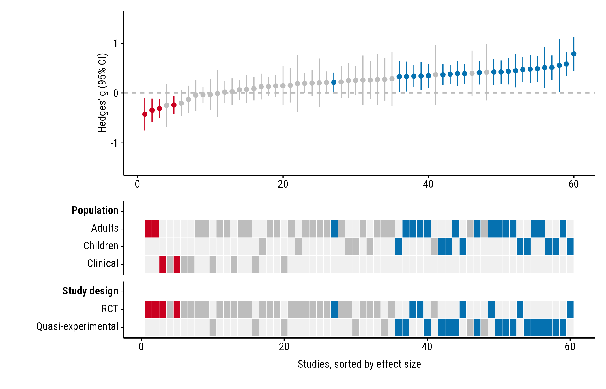
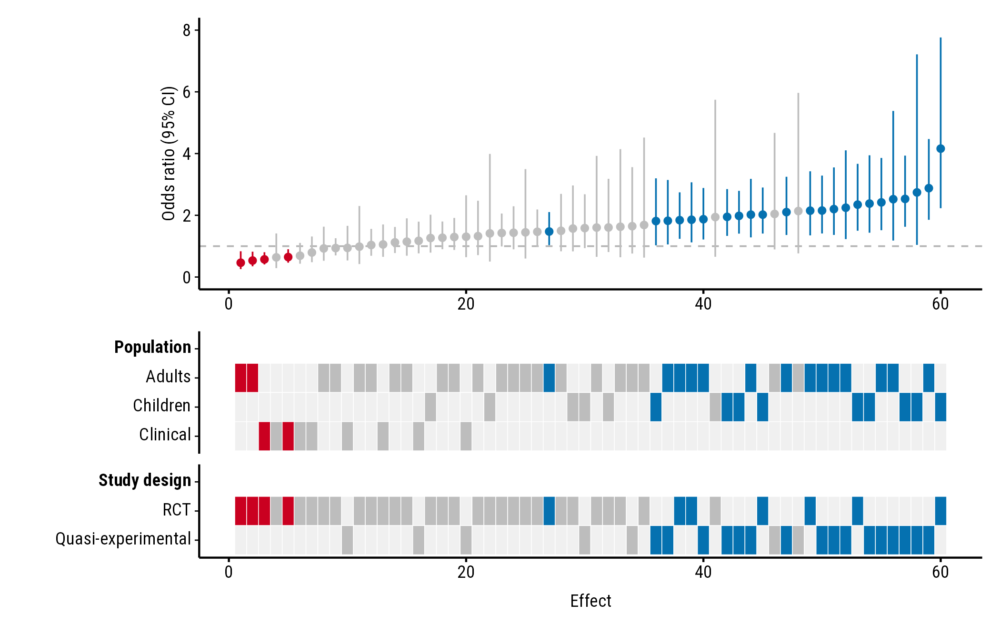
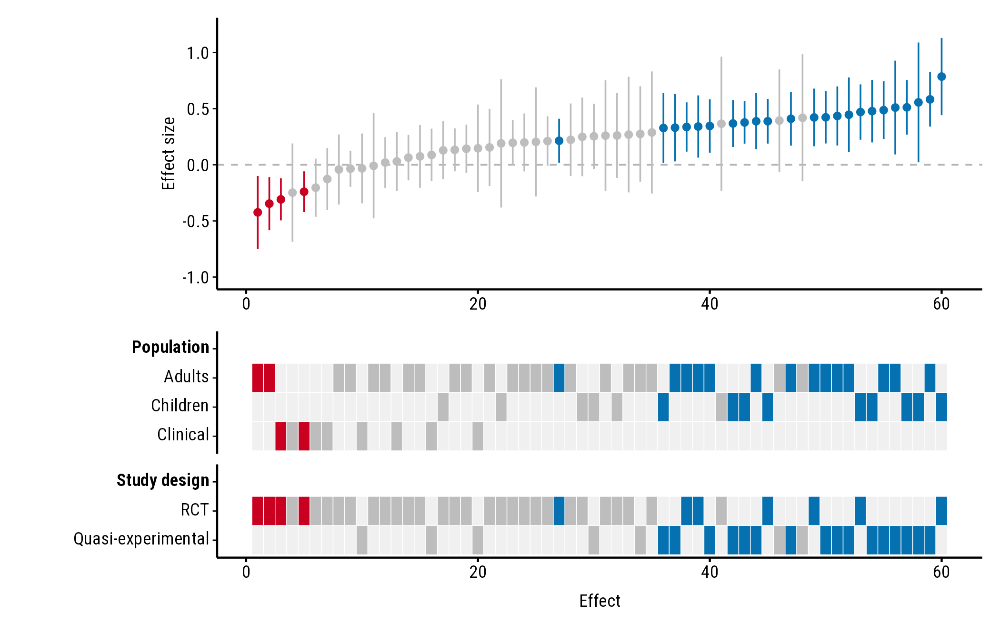

How to set the axis titles, hide the study axis ticks, set the value
meaning “no effect”, a band of effects too small to matter, and the axis
range. All the examples use the forestmap_example data that
comes with the package.
Axis titles
plot_forestmap(
forestmap_example, "smd", vi = "vi",
moderators = c("Population" = "population", "Study design" = "design"),
y_label = "Hedges' g (95% CI)",
x_label = "Studies, sorted by effect size"
)
Study axis ticks: study_ticks
The numbers along the study axis are each study’s rank by effect
size. They rarely matter to readers, so study_ticks = FALSE
removes them and their tick marks:
plot_forestmap(
forestmap_example, "smd", vi = "vi",
moderators = c("Population" = "population", "Study design" = "design"),
study_ticks = FALSE
)
Ratios: null_value
Colours depend on whether each confidence interval excludes the value
meaning “no effect”. That’s 0 for differences (and log ratios) and 1 for
ratios such as odds ratios. Odds-ratio intervals aren’t symmetric, so
give the bounds with lb and ub rather than a
variance. Here the example effects are converted to odds ratios:
odds <- forestmap_example
to_log_or <- pi / sqrt(3)
odds$or <- exp(odds$smd * to_log_or)
odds$or_lower <- exp((odds$smd - 1.96 * sqrt(odds$vi)) * to_log_or)
odds$or_upper <- exp((odds$smd + 1.96 * sqrt(odds$vi)) * to_log_or)
plot_forestmap(
odds, "or", "or_lower", "or_upper",
moderators = c("Population" = "population", "Study design" = "design"),
null_value = 1,
y_label = "Odds ratio (95% CI)"
)
Ratios are often easier to read on the log scale: plot
log(or) with its variance (vi) and the default
null_value = 0.
Effects too small to matter: rope
rope shades a band of effects you consider too small to
matter (a “region of practical equivalence”). Give two numbers, or one
number for a band symmetric around null_value:
plot_forestmap(
forestmap_example, "smd", vi = "vi",
moderators = c("Population" = "population", "Study design" = "design"),
rope = c(-0.1, 0.1)
)
Axis range: y_limits
By default the y-axis is symmetric around null_value and
wide enough to show every confidence interval (for ratios, it starts at
0). Set your own range with y_limits; parts of intervals
outside it are cut off:
plot_forestmap(
forestmap_example, "smd", vi = "vi",
moderators = c("Population" = "population", "Study design" = "design"),
y_limits = c(-1, 1.2)
)